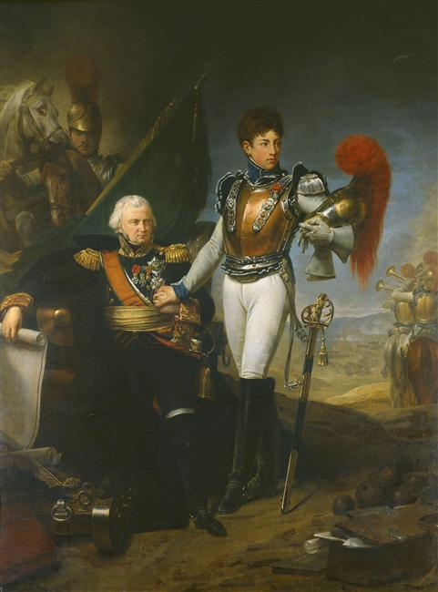
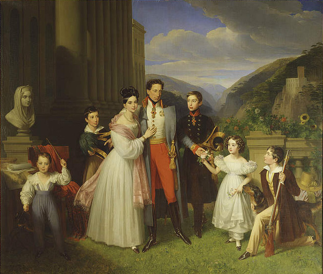

바그람 전투 (제18편) - 통쾌하지 않은 승리
게시: 2017-11-11T19:33:04+09:00
1809년 7월 6일 밤 바그람 전투의 총성이 잦아든 뒤 나폴레옹은 다른 전투에서처럼 '퇴각하는 적군을 즉각 추격 섬멸하라'고 부하들을 재촉하지 않았습니다. 냉혈한인 그도 휘하 병사들이 거의 잠도 못자고 제대로 먹지도 못한 상태로 무려 40시간에 걸쳐 힘겨운 싸움을 했다는 것을 잘 알고 있었기 때문이었습니다. 그러나 나폴레옹이 적극적이고 즉각적인 추격을 명하지 않은 이유는 그 뿐만이 아니었습니다. 오스트리아군은 비록 패배를 인정하고 물러났지만, 무너지지는 않았던 것입니다.
전투 이후 프랑스군의 라콩브(Lacombe)라는 장교가 그의 아버지에게 보낸 편지에 이런 구절이 있었습니다. "전투 결과는 기대했던 만큼의 성공은 아니었습니다. 우리가 적을 물리치기는 했으나 그들을 패주시키지는 못했습니다." 사실이었습니다. 전투 내내 나폴레옹의 옆을 지키며 전투 현황을 속속 파악하고 있던 사바리 장군도 "오스트리아군은 프랑스군의 성급한 행동을 자제시킬 정도로 잘 싸웠다"라고 기록에 남길 정도였습니다.
전투의 승패는 어느 쪽의 사상자가 더 많았는가로 판별되는 것이 아닙니다. 어느 쪽이 꼬리를 말아쥐고 물러나느냐에 따라 승패가 결정되는데, 보통 등을 보이며 후퇴하는 측의 대오가 무너지기 마련이었고, 그 뒤를 추격하는 적의 기병이나 경보병에게 많은 피해를 입었기 때문에 패자의 사상자 수가 더 많았던 것입니다. 그런데, 이번 바그람 전투에서는 양상이 달랐습니다. 오스트리아군은 후퇴하는 와중에도 대오를 굳게 지켰고, 결국 프랑스군은 평소 하던 대로 후퇴하는 적의 뒤를 칠 수가 없었습니다.
여기에는 몇가지 이유가 있었습니다. 먼저, 오스트리아군의 질적 향상이 있었습니다. 오스트리아 정부에 재정난을 일으킬 정도로 군비를 투입하여 카알 대공이 열심히 육성한 상비군은 확실히 과거와는 다른 굳센 모습을 보여주었습니다. 고대 스파르타에 전해지는 격언 중에 '한 국가와 반복하여 자주 전쟁을 하지 말라'는 것이 있었는데, 이유는 잦은 전쟁 경험은 상대국에게도 군사 역량의 강화를 낳기 때문이었습니다. 나폴레옹이 이번 제5차 대불동맹전쟁에서 겪은 바가 딱 그랬습니다. 프랑스군이 국민개병제에 의한 징집군의 편성, 기동력을 중시한 전술, 자율성과 유연성을 잘 살려주는 군단제 운영을 통해 유럽의 다른 국가들에 비해 가지고 있던 상대적 우월성은 어느 틈엔가 오스트리아군에게도 어느 정도 복제되어 있었고, 이는 전투력의 상향 평준화를 이끌었던 것입니다.
또 카알 대공의 근본적인 전략도 오스트리아군의 비교적 질서있는 후퇴에 일조했습니다. 카알 대공은 전쟁 시작 전부터 개전에는 반대하는 입장이었지요. 그는 어차피 오스트리아 혼자 싸우는 이 전쟁에서 나폴레옹을 꺾을 수는 없으며, 만약 싸우더라도 최후의 일인까지 다 죽어 쓰러지는 결전보다는 적당히 싸우다 패배가 분명해지면 후퇴해야 한다는 생각을 가지고 있었습니다. 이유는 간단했습니다. 지더라도 군사력을 어느 정도 보존한 상태여야 나폴레옹과의 종전 협상에서 조금이라도 더 유리한 조건을 끌어낼 수 있다는 것이었습니다.
카알 대공이 그런 전략을 가지고 있었기 때문에 비교적 이른 시간인 오후 2~3시 경에 이미 후퇴를 결정했고, 덕분에 오스트리아군은 힘을 좀 남겨둔 채로 후퇴를 시작하여 군사력을 보존한 채, 심지어 프랑스군 포로 수천 명까지 끌고 후퇴를 할 수 있었습니다. 전투 다음날 새벽, 나폴레옹이 혹시 오스트리아군이 어제에 이어 다시 도전해올 것인지를 걱정해야 할 정도로 오스트리아군은 비교적 건재한 편이었습니다.
그렇다고 바그람 전투가 비교적 사상자가 적은, 꽤 순한 전투였다는 뜻은 결코 아닙니다. 바그람 전투는 이긴 프랑스군이나 진 오스트리아군이나 깜짝 놀랄 정도로 많은 사상자 수를 낸 참혹한 전투였습니다. 일단 양측의 참전 병력이 엄청난 규모였습니다. 프랑스군이 약 17만, 오스트리아군도 요한 대공의 병력까지 합해서 약 15만에 달하는 병력을 동원했다고 되어 있지요. 실제로는 요한 대공의 군대는 언저리까지만 오고 총 한방 쏘지 않았으니 전투 참전 병력 수에서는 빼는 것이 맞겠고, 또 프랑스군도 로바우섬을 지키던 보병들은 실제로는 참전하지 않았으니 일부 빠지겠습니다만, 아무튼 양측이 무려 32만에 달하는 병력을 동원했습니다. 이는 유사 이래 유럽 대륙에서 벌어진 전투 중 가장 많은 수의 병력이 한 자리에 집결하여 벌인 최대 규모의 전투였습니다.
참전 병력이 많으니 당연히 사상자도 많았습니다. 당시 사상자 수는 정확한 집계가 불가능했고, 또 설령 가능했다고 하더라도 제대로 발표하지 않는 것이 보통이었습니다. 특히 나폴레옹은 대내외 과시를 위해 적의 사상자 수를 부풀리고 아군의 사상자 수는 양심도 없이 작게 조작하는 것으로 악명 높았지요. 이번에도 마찬가지였습니다. 프랑스군 육군 회보(Bulletin de la Grande Armée)에서는 바그람 전투에서 프랑스군이 입은 피해가 전사 1,500에 부상 3~4,000으로 경미하다고 보도했습니다. 물론 터무니없는 거짓말이었습니다. 실제 사상자 수는 약 3만이 넘는 것으로 추정되는데, 혹자는 4만이 넘는 것으로 보기도 합니다. 오스트리아군의 피해도 약 3만이 넘는 것으로 추정됩니다. 이는 양측 모두에게 약 20% 가까운 사상율이었습니다. 당시 승자 측의 사상율이 약 10%, 패자 측은 약 20%가 상식적인 수준이었던 것을 생각하면 이 바그람 전투는 양측 모두 패배였던 셈입니다.
양측의 피해가 모두 컸던 이유는 이 바그람 전투는 유례없는 대규모 포격전을 동반했기 때문이었습니다. 프랑스군은 약 488문, 오스트리아군도 414문이나 되는 전례없는 막강한 화력을 총동원했다는 점도 문제였으나, 특히 이 전투의 주무대였던 마르히펠트의 평원이 지형과 지질 탓이 컸습니다. 이곳은 땅 표면이 비교적 단단하고 매우 평평한 지역인지라, 대포알들이 땅에 처박히지 않고 통통 튀며 먼거리까지 날아가면서 많은 병사들의 팔다리와 허리를 꺾어놓았던 것입니다. 나폴레옹도 전투가 끝난 뒤, 이 전투는 포병에 의한 승리라며 휘하 포병들의 노고를 칭찬했습니다. 뿐만 아니라, 포병대에게 영광을 더해주고자 전체 포병단 총사령관인 라리부아지에르(Jean Ambroise Baston de Lariboisière) 장군의 아들 페르디낭(Ferdinand Baston de La Riboisière)을 뽑아 이 승전보를 파리로 전하게 했습니다.

(이 그림이 드물게 그려진 아버지와 아들이 한꺼번에 나온 라리부아지에르 부자의 초상입니다. 바그람 전투 당시 27세였던 페르디낭은 카라비니에, 즉 총기병대 소속 장교였는데, 역시 나폴레옹의 과도한 욕심에 희생되고 말았습니다. 1812년 보르디노 전투에서 전사한 것입니다. 아들을 잃은 아버지도 너무나 슬픔에 젖은 나머지 병으로 쓰러졌고, 결국 1812년 겨울을 못 넘기고 쾨니히스베르크에서 병사하고 말았습니다.)
하지만 페르디낭이 들고간 승전보에는 파리 시민들이 기대했던 화려한 전과는 구체적으로 적을 수가 없었습니다. 보통 그런 전과는 노획한 적의 군기와 대포, 그리고 많은 포로의 숫자로 나타나는 것이 보통이었는데, 그것이 좀 부실했던 것입니다. 프랑스군은 오스트리아군으로부터 10폭의 군기와 20문의 대포, 그리고 약 7,500의 포로를 빼앗았습니다. 그러나 프랑스군이 빼앗긴 것은 군기 12폭, 대포 21문에 포로도 약 7천 이상이었습니다. 오히려 적자를 보았던 셈이지요. 그 때문에 전투가 끝난 뒤 이 계산서를 받아든 나폴레옹은 '전쟁이 전에는 이렇지 않았다, 노획한 대포도 포로도 거의 없구나, 아무 결과가 없군'이라며 한탄했습니다.
상황이 이 지경이다보니, 전투 다음날인 7월 7일 아침 잠에서 깬 나폴레옹은 혹시 카알 대공이 다시 군대를 이끌고 도전해오지 않을까 우려할 정도였습니다. 그러나 카알 대공은 이미 할 만큼 했다고 생각하고 물러나고 있었습니다. 나폴레옹은 그날 아침 보고를 위해 나폴레옹의 막사를 찾은 막도날드를 갑자기 와락 끌어안아주고는 그를 '프랑스 제국의 원수'라고 불러주었습니다. 즉, 영광스러운 원수의 계급으로 승진을 시켜준 것이지요. 뿐만 아니라 우디노와 마르몽에게도 원수 계급을 내렸습니다. 이 사실이 공표되자, 병사들은 막도날과 우디노는 그렇다치고, 마르몽은 뭔일래냐 라며 수군거렸습니다. 파르퀑(Parquin) 소령의 회고록에 따르면 병사들은 아예 이런 노래를 만들어 불렀다고 합니다.
"막도날은 프랑스가 지명했고, 우디노는 군이 지명했는데, 마르몽은 우정이 지명한거라네"
(La France a nommé Macdonald, l'armée a nommé Oudinot, l'amitié a nommé Marmont)
사실 마르몽 달마시아(Dalmatia) 군단을 이끌고 최후의 예비대로 남아 있었고, 아무 한 일이 없었던 것입니다. 실제로 나폴레옹도 원수 임명장과 함께 별도의 개인 편지를 함께 마르몽에게 보내, '너와 나 사이의 비밀이지만, 넌 이 계급에 어울리는 전공을 올린 일이 없다는 것을 잊지말라'고 갈구기도 했습니다.

(마르몽은 배신의 대명사로서, 라구사 공작이었던 그를 따서 Raguser라는 단어가 만들어질 정도였습니다. 현대 프랑스어 사전을 찾아봐도 정말 raguser는 trahir, 즉 배신하다라는 말의 동의어라고 설명이 나옵니다. 당대에는 더 심해서, 1830년 7월 혁명 당시 그가 시위 진압을 주저하자, 부르봉 왕가의 앙굴렘 공작은 그에게 "그를 배신했듯이 우리도 배신하려는거냐 ?" 라며 맹비난을 했다고 합니다.)
이렇게 갈굼을 당한 마르몽에게 '승진을 정당화시켜줄 전공을 세우라'는 말과 함께 카알 대공을 추격하라는 임무가 주어졌습니다. 그의 달마시아 군단은 1만1천 정도로 매우 빈약한 편이었지만 전날 전투에 전혀 참전하지 않아 체력 고갈이 없는 유일한 부대이기 때문이었습니다. 이렇게 맹렬한 추격을 개시한 마르몽은 3일 후인 7월 10일 츠나임(Znaim)에서 카알 대공의 잔존 병력 약 5만을 포착했습니다. 1만대 5만의 대결이었으니 상대가 되지 않는 싸움이었지만 마르몽은 바로 뒤를 나폴레옹의 본대가 따라올 것이므로 적이 후퇴하지 못하도록 물고 늘어지는 전법을 썼습니다. 결국 양측이 하루를 넘겨가며 수천 명씩의 사상자를 내는 치열한 전투 끝에 다음날 저녁 무렵 나폴레옹의 본대가 도착하자, 카알 대공은 휴전을 요청하게 됩니다. 이것이 제5차 대불동맹전쟁의 마지막 전투이자, 카알 대공 인생 최후의 전투였습니다.
카알 대공이 이후 병으로 일찍 죽었다는 이야기는 아닙니다. 그는 이 휴전 협정을 맺으며 총사령관직을 비롯한 모든 관직에 대해 사표를 제출하고 물러났기 때문입니다. 엄밀히 이야기해서, 카알 대공은 이 휴전에 대해 월권 행위를 한 것이었습니다. 그에겐 프란츠 황제의 승인없이 이렇게 휴전 요청을 할 권한이 없었습니다. 그는 더 이상 병사들의 무의미한 희생을 막고 합스부르크 왕가의 보존을 위해 모든 책임을 지고 이런 결정을 내린 것이었습니다.

(카알 대공과 그의 가족입니다. 그가 나폴레옹급의 천재는 아니었을지 몰라도, 과거의 영광에만 젖어 현실 감각이 없었던 합스부르크 왕가에 그래도 그만한 인재가 없었으며, 사실 그의 전략적 판단이 처음부터 옳았습니다.)
Source : The Reign of Napoleon Bonaparte by Robert Asprey
1809 Thunder On The Danube: Napoleon's Defeat of the Habsburgs by Jack Gill
https://en.wikipedia.org/wiki/Wagram_order_of_battle
https://www.napoleon.org/en/history-of-the-two-empires/articles/the-battle-of-wagram/
https://en.wikipedia.org/wiki/Jean_Ambroise_Baston_de_Lariboisi%C3%A8re
http://www.napolun.com/mirror/napoleonistyka.atspace.com/Battle_of_Wagram_1809.htm
https://www.napoleon.org/histoire-des-2-empires/articles/oudinot-en-1809-1810-les-lauriers-de-la-gloire/
https://en.wikipedia.org/wiki/July_Revolution